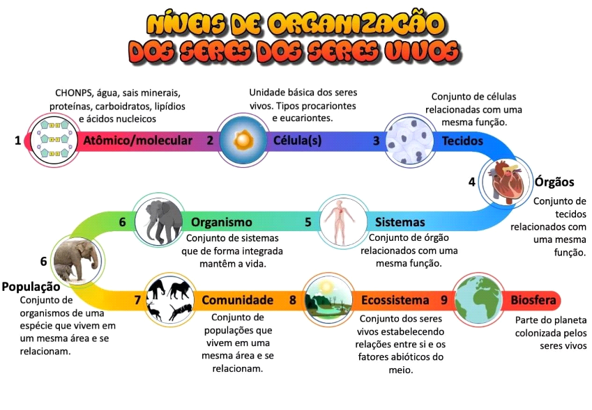

Nessa aula nós vimos primeiramente os níveis de organização dos seres vivos, onde começa pelo átomo; porém a biologia começa a estudar a partir das moléculas, que é estudada pela bioquímica. Logo em seguida temos as organelas e células que são estudadas pela citologia. Seguido desses temos os tecidos que são estudados na histologia, pelos óbvios histólogos. Logo temos os órgãos e sistemas ou aparelhos, que são estudados pelas divisões da anatomia e fisiologia. Temos depois os indivíduos ou organismos, que são estudados pela zoologia, botânica, fitologia ou genética dependendo do tipo de indivíduo; e ainda estudando estes, temos a taxonomia, que realiza as classificações dos mesmos. E por último e não menos importante temos as populações, comunidades, ecossistemas e biosfera, que são estudadas pela ecologia.
Resumo do Dia:


Kahoot 2
Pergunta 1 - É o estudo dos seres vivos em todos os seus aspectos!
( )Genética
( )Biologia
( )Ecologia
( )Fisiologia
Pergunta 2 - Nível de organização que se encaixa o estudo de um óvulo!
( )Célula
( )População
( )Tecido
( )Organismo
Pergunta 3 - Nível de organização em se que se estuda o conjunto de árvores de espécies diferentes da Mata Atlântica?
( )Organismo
( )Comunidade
( )População
( )Ecossistema
Pergunta 4 - Nível de organização de um gato!!!.
( )População
( )Sistema
( )Organismo
( )Biosfera
Pergunta 5 - Nível de organização mostrado na figura, o abacate em si...
( )Organismo
( )Sistema
( )Órgão
( )Célula
Pergunta 6 - Que níveis de organização estão ordenadamente do simples para o complexo?
( )Biosfera, ecossistema, organismo, comunidade, população.
( )População, organismo, comunidade, ecossistema, biosfera.
( )População, ecossistema, comunidade, organismo, biosfera.
( )Organismo, população, comunidade, ecossistema, biosfera.
Pergunta 7 - A Citologia estuda...
( )Células
( )População
( )Tecidos
( )Hereditariedade
Pergunta 8 - A ____________ é a divisão da biologia que estuda a identificação e classificação dos seres vivos
( )Genética
( )Fisiologia
( )Histologia
( )Taxonomia
Pergunta 9 - Divisão da biologia que estuda a relação dos seres vivos entre si e deles com o meio ambiente.
( )Genética
( )Anatomia
( )Ecologia
( )Botanica
Pergunta 10 - Em que nível de organização se estuda as substâncias que constituem os seres vivos?
( )Molécula
( )Bioquímica
( )Célula
( )Biologia Molecular